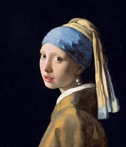

Hey, somos M-Artes

"Sólo el arte penetra lo que el orgullo, la pasión, la inteligencia y la costumbre erigen por todas partes: las realidades aparentes de este mundo. Existe otra realidad, la verdadera, que perdemos de vista. Esa otra realidad siempre nos está enviando señales, que, sin arte, no podemos recibir.” Samuel Bellow.
Bellas Artes
Las bellas artes se clasifican en 7, en mitologia griega eran 7 musas hijas de Zeus y Mnemisine y patrocinaban las artes, algunas de ellas fueron:
Estilos en la historia
A lo largo de la vida humana como bien sabemos tuvimos distintas formas de ver y percibir la vida, existieron diversos estilos de arte entre ellos:
Artes
Encuentra que es lo que te apasiona, hay diferentes ramas las cuales puedes experimentar y encontrar un hobbie o un estilo de vida


Lo que se me hace mas interesante al estar presente en el camino de estas personas, es su forma de ver y presentir las situciones, de como puede solo ser un hobbie o la menera de salir de la realidad
Jose Antonio
Gerente de estudios
Estoy satisfecha de las maneras en que me puedo expresar y sobre todo
cautivada con la historia detras de cada obra de arte, tambien me sorprende las tecnicas para convertir piedra en piel.
Elisa
alumna de Escultura
Me encanta el ambiente que generamos con el alumnado y es una bonita experiencia poder verlos expresar de alguna manera lo que estan observando, sintiendo y viviendo
Angel
Profesor de Pintura